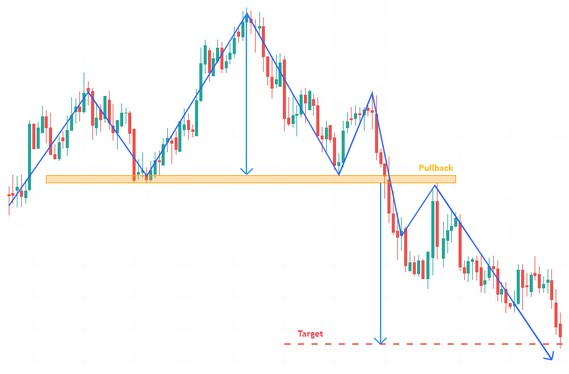
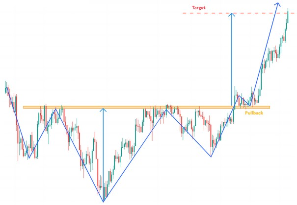

- Figures chartistes : L'Epaule Tête Epaule -
La figure épaule-tête-épaule est une figure chartiste de retournement de tendance.
En théorie, la hauteur des deux épaules doit être identique, et la ligne de cou doit être horizontale.
En pratique, il arrive fréquemment que les épaules ne soient pas de la même hauteur, ou que la ligne de cou soit ascendant ou descendante.
La ligne de cou est déterminée par les deux plus bas atteints après la première épaule et la tête. Ces deux points bas ne sont pas toujours au même niveau; La ligne de cou peut donc être ascendante (52% des cas), descendante (43% des cas) ou horizontale (10% des cas).
L'objectif de cours est égal à la hauteur entre la ligne de cou et le sommet de la tête, reportée sous la ligne de cou.
Validité :
Le premier et le troisième sommet (approximativement de la même hauteur) forment les épaules.
Le deuxième sommet (à une hauteur supérieure à celle des épaules) forme la tête.
Les espaces entre chaque sommet doivent être identiques pour valider la figure en tête et épaules.
La figure tête et épaules est validée définitivement à la cassure de la ligne de cou.
Epaule Tête Epaule

Epaule Tête Epaule inversée

93% La sortie de la figure tête et épaules est baissière.
63% le cours atteint l'objectif lorsque la ligne de cou est cassée.
96% le mouvement baissier se poursuit à la cassure de la ligne de cou.
45% après sortie, le cours effectue un pullback en résistance sur la ligne de cou.
98% La sortie de la figure tête et épaules inversée est haussière.
74% le cours atteint l'objectif lorsque la ligne de cou est cassée.
97% le mouvement haussier se poursuit à la cassure de la ligne de cou.
52% le cours effectue un pullback en support sur la ligne de cou.
- Plus le mouvement précédant la figure sera long, plus le mouvement baissier à la cassure de la ligne de cou sera important.
- Plus le mouvement précédent la figure est brutal, plus le mouvement baissier à la cassure de la ligne de cou sera important.
- Les figures en tête et épaules dont la ligne de cou est ascendante offrent de meilleures performances.
- Les figures en tête et épaules inversée dont la ligne de cou est descendante offrent de meilleures performances.
- Si l'épaule gauche est supérieure à l'épaule droite, la figure en tête et épaules offre de meilleures performances.
- Si l'épaule gauche est inférieure à l'épaule droite, la figure en tête et épaules inversée offre de meilleures performances.
- Après sortie de la figure en tête et épaules, les pullbacks sur la ligne de cou sont néfastes à la performance.